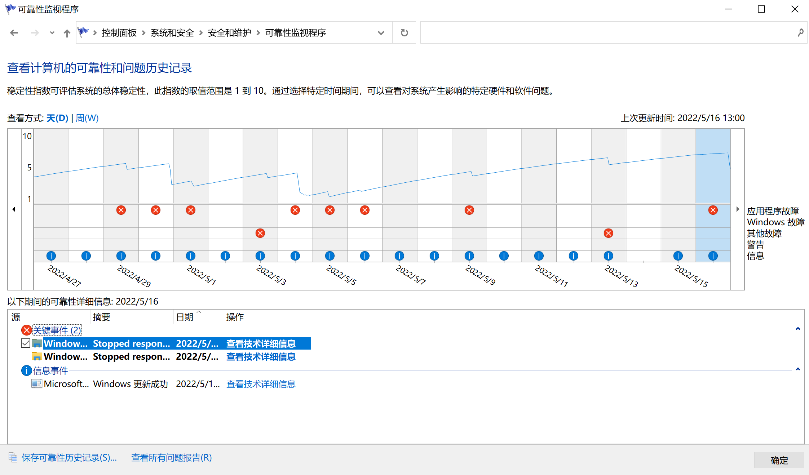
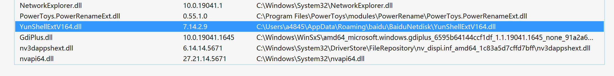

百度网盘导致资源管理器(explorer)崩溃
我对百度网盘的评价是：用户体验极差的毒瘤软件。
突然发现电脑的资源管理器打不开了，一打开资源管理器就会卡住，开始菜单打不开，任务栏也无响应。
对于资源管理器崩溃的问题，通常在“可靠性历史记录”里找崩溃的原因。
可以在 Windows 搜索里直接搜索“可靠性”或者 “控制面板 -> 系统和安全 -> 查看你的计算机状态 -> 维护 -> 查看可靠性历史记录” 查看可靠性历史记录。
打开之后，可以发现最近一段时间的计算机可靠性，错误越多可靠性越低。（我这个问题持续了有一段时间了，实在是烦了才抽时间找原因）

点击 “查看技术详细信息”，一般来说运气好的话，直接能找到一些蛛丝马迹。比如说第三方程序的进程，那么这个崩溃很有可能就是对应的程序导致了，卸载了也许就好了。
我之前遇到过一次金山毒霸导致的资源管理器崩溃，在详细信息里看到了“kingsoft”字样，于是我把电脑里的所有金山的软件都卸载了，果然就好了。
但是这次没有找到什么有用信息，于是我进一步点击 “查看啥啥文件”（我给忘了，没截图）。
之后会打开临时目录下的一个文件夹，里面有一个 memory.hdmp 文件。
用 Visual Studio 可以打开它，拉到最下面，能发现一些第三方软件的模块。
看到 YunShellExtV164.dll 的路径，就知道它是百度网盘的玩意。
把百度网盘卸载了，问题解决。

实际上那些第三方模块都有可能是导致崩溃的罪魁祸首，之所以第一个挑百度网盘卸载，是因为它的用户体验实在是太差了，让我不得不怀疑它的制作水平。
我觉得我只需要罗列一下它的问题，就能感受到百度网盘的用户体验有多差：
- 打开百度网盘的时候静默更新，没有任何的窗口提示。百度网盘那么大的体积做不到秒下载秒更新，静默更新居然不给个提示？我一度以为百度网盘崩溃了。
- 卸载程序居然也会触发自动更新。我
tmd想卸载百度网盘还得更新到最新版。而且也是静默更新，我在任务管理器盯着他完成更新下载。 - 把自己装到不需要管理员权限的目录下（用户数据目录），违反了微软的软件开发规范，只为了方便自己往用户电脑里拉屎。
- 基于 electron 的桌面软件开发技术已经很成熟了，但是百度网盘的UI在高分屏下显示很差劲。我甚至找不到和他一样UI差劲的国产软件，在这一方面成为国产之最当之无愧。
- 用很恶心的方法引导用户将数据备份到百度网盘，这一点在手机客户端做的尤其过分，同意备份的按钮做得特别大，不小心一点很容易点到。
- 客户端里的广告多且恶心，比如注册贷款软件送会员，相当于用身份证、银行卡等信息换几天的会员。
我对百度网盘的评价是：用户体验极差的毒瘤软件。
百度网盘导致资源管理器(explorer)崩溃